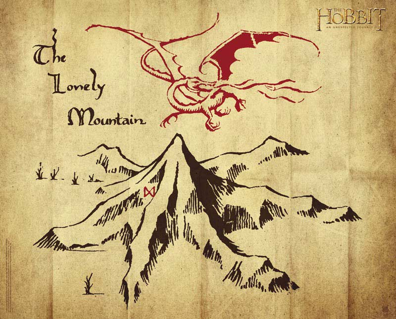

On Encoding To Rule Them All
Il n'y a pas de hors-texte
— Derrida, French philosopher
There And Back Again
Let me tell you a story about the letter ñ...
In its journy from your will...
to your computer screen.
Prologue
The ñ is the 15th letter of the Spanish alphabet. It is a n with a diacritical tilde. It's history is tracked to monasteries where the glyph ñ was a shortcut for nn.
In your mind
Everybody has a clear vision of what a ñ. Don't you?
The physical keyboard

The keyboard is agnostic about what letters it
has printed on its own surface. It simply sends the
scancode 0x27.
You can use # showkeys --scancodes to inspect the
raw scan codes.
The abstract keyboard
Scancodes are too close to hardware events, so they are translated into more abstract keycodes.
You can use # getkeycodes display the map between
scancodes and keycodes.
Language Layouts
What is printed on your keyboard must to be known by the system to correctly translate abstract keycodes into keysym symbols.
Here is the mapping table for a QWERTY-Spanish layout.
Text Representation
Once we know the correct symbol, it should be translated to some specific representation, a number in LATIN-1 or Unicode tables.
Use dumpkeys | loadkeys -u -m > unicode.h to
build the table translating keysyms to code points.
Here is the resulting table for the previous mapping.
Text Encoding
Finally, we need an encoding:
a scheme to translate numbers to bits.
Echo
Thus, the intrepid ñ reaches its destination,
turned into simple bytes 0xc3 0xb1. Now it is time
to present itself before the world.
Return to the Representation
Terminals are configured to work with encodings, this case is UTF-8. The terminal know how to turn bytes into a Unicode code point.
Fonts: Numbers to Vector Graphics

The Unicode code point is then looked for inside the font. It maps to a vector graphic depicting the symbol.
Use $ gucharmap to display the utility to explore
installed fonts.
The Video Buffer

And finally, the graphic information is put into the video memory to be displayed through the screen.
Credits
Unicode
It is an effort to create a table of characters for most of the writing systems on Earth (and beyond) and a set of rules for normalization, decomposition, collation, rendering and bidirectional display order.
But the core component is no more than an humongous
table: 1.114.112 entries in total from
U+0000 to U+10FFFF. Here is how
it is organized...
Codepoints
Each entry in the table is said to be a grapheme.
A grapheme is the smallest unit in a written language. Each
grapheme has an assigned code point in the
Unicode's code space of 1.114.112 values. They are designated by
the prefix U+ followed by its hexadecimal
representation.
Planes
Unicode is divided into 17 planes, each of 65.536 code points.
Graphemes inside each plane are grouped by similarity.
Unicode overlaps ASCII & Universal Character Set.
The plane 0 is called Basic Multilingual Plane and comprises most of the modern languages in the world.
The plane 1 is called Supplementary Multilingual Plane and comprises historycal scripts, mathematical alphanumerics, Emoji and game symbols.
Plane 2 is called the Supplementary Ideographic Plane and holds CJK Unified Ideographs.
Planes 3 to 13 are unused.
Plane 14 is the Supplementary Special-purpose Plane intended to hold special language tags.
Planes 15-16 are reserved for third parties to add their own glyphs. Commonly used by fonts to describe building blocks for other characters.
Curiosities
- There are duplicates in Unicode.
- Planes beyond 0 are called astral planes.
- The ConScript initiative aims to integrate fictional languages such as Tengwar or Klingon inside the Unicode table, in some areas of BMP and planes 15 and 16.
- The standard can be modified outside (as in the case of the power symbol) the committee.
Encodings
You need some way to transmit the codepoints. For instance, you could use 4 bytes to encode any of the Unicode code points now and future.
Suppose you want to transmit:
España
You need to transmit the code points:
U+0045 U+0073 U+0070 U+0061 U+00F1 U+0061
And you could use a 32 bit encoding for that:
00000045 00000073 00000070 00000061 000000F1 00000061
This is indeed the UTF-32 encoding format which is a direct representation of the Unicode table.
Each chunk of bits used to encode a code point is named a code unit.
The problem is you're using 48 bytes to encode a 6-letter word.
And you are using an encoding scheme which takes into account room for 10 unused planes!
So there are other more economic ways to encode the same text.
UCS-16 / UCS-2
- Actually, UCS-16 does not exist. It refers to UCS-2.
- The number 2 stands for 2 bytes.
- It's the default encoding for the Universar Character Set.
- It covered all the UCS code space but only the BMP in Unicode.
- It is how JavaScript exposes strings.
For the España example, the encoded message reads as
follows:
0045 0073 0070 0061 00F1 0061
You should considerate the endianness as well!
UTF-16
- The number 16 stands for 16 bits.
- It's and extension over UCS-2.
- By using pairs of surrogates it can encode all the Unicode space.
- Surrogates are pairs of code units that share the representation of the code point.
- The way they encode the code point limits Unicode to the weird 1.114.112 different values it has.
- Actually, surrogate code points are considered into Unicode and they will be never assigned to a grapheme.
UTF-8
- The number 8 stands for 8 bits.
- It's quite popular among the World Wide Web.
- It's not based on surrogated pairs but in a special encoding that allows: ASCII characters to be represented by 1 byte; almost all Western Europe languages with 2 bytes; Asian and Ideographic Languages with 3 bytes and the rest of the table with 4 bytes.
- It is how Python 3 exposes strings by default
The UTF-8 encoding is designed to expose a bunch of desired properties for an encoding scheme...
For multibyte representations, the first leading byte include as
many 1 bits as the number of bytes needed to encode
the code point plus a 0. The rest of n
bits contains the first n bits of the code point.
Following bytes start by 10 and complete the byte
with the following 6 bits of the code point. Code points are
padded with 0 bits when needed.
For the España example, this time the encoded
message reads as follows:
45 73 70 61 C3B1 61
The ñ is encoded this way:
Code point: U+00F1 Binary: 00000000 11110001 UTF-8 : 11000011 10110001 Hex : C 3 B 1
Handling Emoji in JavaScript
A case of study
Given a message in UTF-8 with emoji, translate it to HTML mixing text and images.
JavaScript Harmony (ES 6) is including a lot of text related functions and upgrading its encoding scheme to UTF-16!
But in current JavaScript, the encoding is UCS-2 and that means Emoji characters (plane 3) are out of the code space...
So we will use images from an Emoji database instead!
So, the idea is quite simple: first decode UTF-8 to Unicode code points and pass through them creating text nodes for text and styled elements for emoji.
What is an Emoji?
Emoji are pictographs (from "picture" e and "character" moji) first provided by the NTT DoCoMo mobile operator in Japan to ease by-message communications.
Not all the original Emoji are in Unicode but some of them
reside with other symbols in the 3rd plane of Unicode, between
U+1F300 and U+27B0.
Where to find information about Emoji
There are several initiatives about compiling and documenting Emoji. One that provides tools to generate CSS files is js-emoji on GitHub (it's actually a library to display Emoji and takes the data from emoji-data) but there are other.
Step 1: reading UTF-8 as data
The original UTF-8 message is:
42 75 65 6e 6f 20 f0 9f 98 89 2c 20 68 65 20 61 71 75 c3 ad 20 75 6e 20 f0 9f 93 9d 20 65 6e 20 f0 9f 87 aa f0 9f 87 b8 20 63 6f 6e 20 61 6c 67 75 6e 6f 73 20 f0 9f 98 80 2c 20 f0 9f 86 97 3f 3f
When encoding is not provided, most of browsers attempt to decode the data. And they do really well! But we don't leave the browser to work for us.
So we are using a special XMLHttpRequest:
function get(url) {
return new Promise(function (resolve) {
var xhr = new XMLHttpRequest();
xhr.open('GET', url);
xhr.responseType = 'arraybuffer';
xhr.onload = function () {
resolve(new Uint8Array(xhr.response));
};
xhr.send();
});
}Step 2: Decode to a Unicode object
Once we have a buffer with the raw bytes, lets translate it into a Unicode object such as an array of code points.
function decodeToUnicode(utf8data) {
var codepoints = [];
var i = 0, codeunit;
var b0, b1, b2, b3;
while (i < utf8data.length) {
codeunit = utf8data[i];
/* code unit handling */
}
return codepoints;
}The only thing we need to know is if the code unit is lower than 128, it is an ASCII byte.
if (codeunit < 0x80) {
codepoints.push(codeunit);
i += 1;
}If not, the code point will be represented with at least 2 code
units at least. The first one will include as leading
1 as code units used to encode the code point, a
0 and the first bits of the code point in the
remaining free bits.
Remaining code units start by 10 and include
chunks of the next 6 bits of the code point.
So for a code point requiring 4 code units:
// 4 code units for a glyph
if (codeunit >= 0xf0) {
b3 = (codeunit & 0x07) << 18;
b2 = (utf8data[i+1] & 0x3f) << 12;
b1 = (utf8data[i+2] & 0x3f) << 6;
b0 = (utf8data[i+3] & 0x3f);
codepoints.push(b3 | b2 | b1 | b0);
i += 4;
}Step 3: Translate to HTML
Now we have an array of code points, the message could be divised:
[66, 117, 101, 110, 111, 32,
128521, 44, 32,
104, 101, 32,
97, 113, 117, 237, 32,
117, 110, 32,
128221, 32,
101, 110, 32,
127466, 127480, 32,
99, 111, 110, 32,
97, 108, 103, 117, 110, 111, 115, 32,
128512, 44, 32,
127383, 63, 63]Emoji are code points above the BMP (greater than 65535).
But have you notice those two consecutive codes
127466 and 127480?
They are called Regional Indicator Symbols and provide a way to represent countries.
They are actually two symbols and is the system who is in charge of replacing them with a flag or whatever.
You can download the complete source for the example.
The demo folder can be found at GitHub as well.
Important Lessons
- There is no such thing as plain text!
- Converting text into bytes is to encode.
- Converting bytes into text is to decode.
- Files does not include the encoding unless explicitly provided.
- To process text we must to be provided with the correct encoding.
Further reading
- Unicode at Wikipedia
- Planes of Unicode
- Strings (from Dive into Python 3)
- Unicode HOWTO (from Python documentation)
- JavaScript’s internal character encoding: UCS-2 or UTF-16?
- Better Unicode Support in Understanding ECMAScript 6
- Why Do Flag Emoji Count As Two Characters? on YouTube
About me
- me
- Salvador de la Puente González
- @salvadelapuente
- My web sites
- http://unoyunodiez.com
http://github.com/lodr